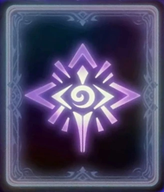

Image

← Back to Organizations & Factions archive
History
Lord of Mysteries
The Moses Ascetic Order was first established by a few humans who had read the Blasphemy Slate. They believed in a non-anthropomorphic god, called the 'Hidden Sage'.
Being morally upright pursuers of knowledge, the original Moses Ascetic Order was a very respectable organisation, and it maintained a good relationship with the other major churches. According to Old Neil, they had a very good relationship with the Church of the Evernight Goddess before their fall. Their beliefs and results on ritualistic magic have heavily influenced them.
Sometime later, the Hidden Sage, the god they believe in, came to life as an evil god that corrupted the order. The Moses Ascetic Order has fallen since then, turning into an evil cult that spreads evil and corruption.
Circle of Inevitability
During spring 1359 of the Fifth Epoch, the Moses Ascetic Order was destroyed after being attacked by the Tarot Club, the Church of the God of Steam and Machinery, and the Church of the Evernight Goddess as a part of Hunting Hidden Sage.
After the events of Hunting Hidden Sage, the Moses Ascetic Order is destroyed. Chairman Torriope is killed. Vice-Chairman, Dragon Scholar Retia Austin survives and escapes using Mystical Re-enactment. Two of the Ten Pillars, Seids and Ohayes, are killed. The surviving members of the Moses Ascetic Order's Ten Pillars goes into hiding.
Cattleya took in many members of the now destroyed Moses Ascetic Order.[?]
Philosophy
The Moses Ascetic Order believes in the 'Hidden Sage'. The description is that of a god, but it is more of an ideology, a natural law. For example, all objects are numeric. They held the view that the Hidden Sage is an embodiment of Spirit Numerology, or that knowledge is supreme, and the Hidden Sage is knowledge itself.
The members of the organisation led ascetic lives to resist losing control and to resolve the effects of the remnant potion. They strictly kept their order’s secrets, and they upheld moral and religious precepts, determined in their pursuit of knowledge. They believe that humans continuously reincarnate after death. Anyone who entered the order would be barred from speaking for five years after becoming a Mystery Pryer. They would learn to remain silent, thereby cultivating and enhancing their focus. Their maxim is "Do as you wish, but do no harm."
Headquarters
Sealed Artifacts
Grade 0
- Destined Madness: Corresponds to a Sequence 2 Sage of the Hermit Pathway.
- Solomon's Mask: Corresponds to a Sequence 2 Duke of Entropy of the Black Emperor Pathway.
- Post-Apocalyptic Scripture: Corresponds to a Sequence 2 Soothsayer of the Wheel of Fortune Pathway.
Grade 1
- Face of the Arcane: Corresponds to Sequence 3 Arcane Scholar of the Paragon Pathway.
- Merumu's Spellbook: Corresponds to Sequence 4 Mysticologist of the Hermit Pathway.
- Eye of Omniscience: Corresponds to Sequence 4 Mysticologist of the Hermit Pathway.
- Creator's Hammer: Corresponds to Sequence 4 Alchemist of the Paragon Pathway.
- Two artifacts corresponding to Sequence 3 Clairvoyant of the Hermit Pathway.
- One artifact corresponding to Sequence 3 Pallbearer of the Mother Pathway.
- One artifact corresponding to Sequence 4 Mysticologist of the Hermit Pathway.
- One artifact corresponding to Sequence 4 Manipulator of the Visionary Pathway.
- Several other Grade 1 Sealed Artifacts
They also had various Grade 2 and 3 Sealed Artifacts. After the operation of Hunting Hidden Sage, the Sealed Artifacts of the Moses Ascetic Order were taken and split between the Tarot Club and the Church of the Evernight Goddess.